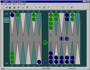
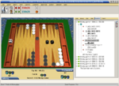

ここに「おすすめ」として紹介する４つのソフト (GNU Backgammon, Bgblitz, JellyFish, Snowie) が、バックギャモンソフト４強です。 これらの最強レベルと安定して互角に戦えれば、世界トップクラスの強さです。 最初はレベルを低く設定して遊んで、ゲームに慣れてきたら徐々にレベルを高くするといいでしょう。 これらのソフトは、「強い」というだけでなく、機能、操作性ともに優れており、どれもおすすめできます。
| ソフト名 (ホームページにリンク) | ライセンス | 言語 | プラットフォーム | 補足説明 | スクリーンショット |
| GNU Backgammon (gnubg) | フリーソフト (GPL) | 日本語対応、多言語 | Windows, Linux, Mac OS X 等。 Mac OS X へのインストールは、Darwinportsを使うと良い。Leopard用のパッケージもある。 | 最もおすすめ。 たれなり流「牛さんの飼い方」に、GNU Backgammon のインストールの手順、使い方が解説されている。 機能、操作性ともに申し分ないが、まだアルファ版であり、ソフトの安定性は完璧ではない。 もしも、動作が不安定に感じたら、他のソフトを試してみるといい。 ボードについては、2D, 3Dのボードを色々変えることができる。 |  スクリーンショットより |
| BGBlitz | フリー版と有料版($23,$46)がある | 日本語対応、多言語 | Windows, Mac OS 9, Mac OS X, Linux 版がある。 | 特にマックユーザーにおすすめ。 BGBlitzの使い方を書きました。 Mac OS X へのインストールは、GNU Backgammon よりも簡単なので、GNU Backgammon のインストールがうまく出来ない人はどうぞ。 |  テーマより |
| JellyFish (ジェリフィッシュ; くらげ) | フリー版と有料版($35,$100,$220)がある | 英語 | Windows | スノーウィーが有名になる前は、「ギャモンソフトといえばジェリフィッシュ」という時代が長く続いた。 |  スクリーンショットより |
| Snowie (スノーウィー) | 有料($100,$380) | 英語 | Windows | 出費を厭わない人には、最もおすすめ。 プロレベルのプレーヤーから高く評価されている。 日本バックギャモン協会のShopから購入可能。 |  |
他にも、いろいろなソフトがあります。お好みでどうぞ。 パソコンだけでなく、ゲーム専用機、携帯電話、ポケットPCなどのソフトもあります。
| ソフト名 (ホームページにリンク) | ライセンス | 言語 | プラットフォーム | 補足説明 |
| Blowfish & Snowfish | フリーソフト | 英語 | Windows | 初期の GNU Backgammon エンジンを元に開発されている。 |
| バックギャモン マグノリア | フリーソフト、Web閲覧時の広告視聴が条件 | 日本語 | Windows | この下欄にある Callenge Price498 Series バックギャモンとして有料販売中の作品と同一内容で、Web閲覧時に表示される広告の試聴が利用条件。 オプトメディアの広告配信プログラム [オプトサーブ(optserve.exe)] がインストールされ、ウェブサイト閲覧時等にアクトマッチ広告が表示される。 |
| Challenge Price 498 バックギャモン マグノリア | Amazon価格 523円 | 日本語 | Windows | CD-ROMとして発売されている日本語のバックギャモンソフトとしては、次のソフトと並んで最も低価格。発売日：2003/09/19, ASIN： B0000CBL6K |
| Shock Price 500 バックギャモン ソニー・ミュージックエンタテインメント | Amazon価格 525円 | 日本語 | Windows | 発売日 2001年3月7日, ASIN： B00005OG03 |
| バリューバックギャモン マグノリア | ベクター価格 840円 | 日本語 | Windows | |
| 超定番ゲームお買い得パック マグノリア | 直販価格 4,179円 | 日本語 | Windows | 囲碁、将棋、麻雀、バックギャモン他30本の定番ゲーム。 Amazon.co.jpでは、同社の「超定番ゲーム お買得35本パック」が2937円にて販売されている。発売日：2005/11/25, ASIN： B000BUNHZY |
| オールスターボードゲームズ 海外編 マグノリア | Amazon価格 2079円 | 日本語 | Windows | バックギャモン、チェス、ボイコニ、ユッゲーム、チャムコニの５つ。発売日：2003/11/20, ASIN： B0000DBPDM |
| 爆発的1480シリーズ UNBALANCE | 店頭販売 1554円 | 日本語 | Windows | バックギャモン協会著 バックギャモン入門解説書付き。 Amazon.co.jpにて購入可能。 生産終了。発売日：2002/02/01, JANコード：45 39820 00159 2 |
| Game Pack モバイル 2 ダットジャパン | Amazon価格 2661円 | 日本語 | Windows, Windows CE | バックギャモン、大富豪、ドローポーカー、スライディングブロックパズルの４つ。 発売日：1999/03/12, ASIN： B00008HWJ6 |
| BGLightCE | フリーソフト (GPL) | 英語 | Pocket PC (Windows CE 3.0+, PocketPC 2000 以上) | GNU Backgammon のポケットPC版。対応機種に記されているようなポケットPCを持っているのであれば、ぜひインストールすべし。 |
| だれでもアソビ大全 ニンテンドー | 希望小売価格 3,800円 | 日本語 | ニンテンドーDS | 将棋、チェス、バックギャモン、花札、軍人将棋、ポーカー、大富豪、ボウリング、ダーツ他40種類以上のゲーム |
| BACKGAMMON2000 UNBALANCE | 店頭販売 6800円 | 日本語 | Play Station | バックギャモン協会著 バックギャモン入門解説書付き。生産終了。 |
| サンコレBEST ゲームの達人２ サンソフト | 2940円 | 日本語 | Play Station | 将棋、囲碁、麻雀、連珠、プレイス、バックギャモン、チェスの７つ。 |
| Hardwood Backgammon lver Creek Entertainment | ? | 英語? | Xbox | |
| Dr.ギャモンのバックギャモン | シェアウェア 735円 | 日本語 | Windows | |
| NetGAME | フリーソフト | 日本語 | Windows | TCP/IPを利用したサーバー不要、対戦可能／観戦可能なネットワークゲーム。 一人で遊ぶことも出来る。「バックギャモン」と「リバーシ」が対戦可能。 |
| 本双六 | フリーソフト | 日本語 | Windows | 本双六は日本に古くからある盤双六の遊び方のうちの代表的なもので、バックギャモンに似たゲーム。 |
| 3DFiBs Backgammon | フリーソフト | 英語 | Windows | FIBSでのネットワーク対戦と、GNU Backgammon の思考を使ったコンピュータとの対戦ができる。 |
| Monte Carlo Backgammon | フリーソフト | 英語 | Windows | |
| Ariston Backgammon | シェアウェア $25 | 英語 | Windows | |
| 3D Backgammon | シェアウェア $12 | 英語 | Windows | 回転可能な3Dボード |
| Hugh Sconyers' BEAROFF 15x15 | DVD12枚 $100 | 英語 | Windows | ベアオフの期待勝率を正確に計算したデータベース。 |
| Big Bang Board Games Freeverse | $24.95 | 英語 | Mac OS X | バックギャモン、チェス、チェッカー、リバーシ他 |
| Backgammon.app | フリーソフト | 英語 | Mac OS X | ネットワーク対戦用ソフト。コンピュータとも対戦可能。 |
| David's Backgammon | $20 | 英語 | Windows, Mac OS X, Mac OS 8/9/Classic, 68k macs | 同じプログラマーが Mac OS X 向けに作り直したものが、次の Absolute Backgammon なので、Mac OS X の場合には後者の方が良いようだ。 |
| Absolute Backgammon | $25 | 英語 | Mac OS X | |
| TD-Gammon | フリーソフト | 英語 | OS/2 Warp 4 | ニューラルネットの強いバックギャモンソフトとしては、最初のもの。 歴史的に価値が高いソフト。 |
| SlapGammon | $20,$30 | 英語 | Palm OS | けっこう強いらしい。 |
| エターナルバックギャモン スター・ゲームズ | 210円 | 日本語 | 携帯 (EZアプリ;BREW) | auユーザーには最もおすすめ。BREWまとめWikiの評価と2chの評価。対応機種一覧。 |
| バックギャモン アプリフォレスト | フリーソフト | 日本語 | 携帯 (iモード、au、Jsky) | |
| ソニックギャモン | 有料 | 日本語 | 携帯 (iモード) | |
| サイコバックギャモン | 有料 | 日本語 | 携帯 (iモード, EZアプリ;BREW) | グラフィックが美しい。ただし、弱い。 |